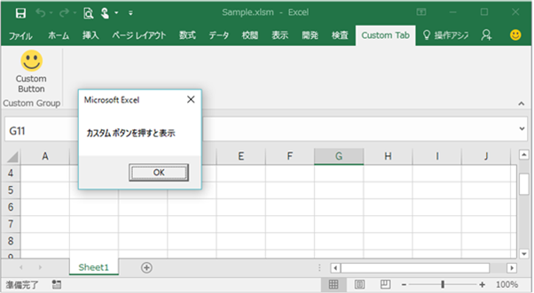
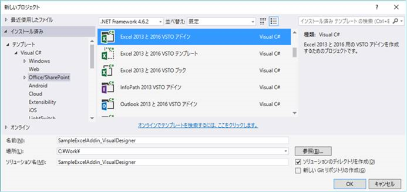
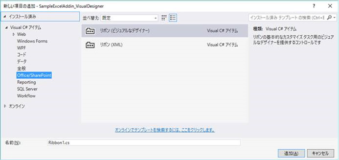
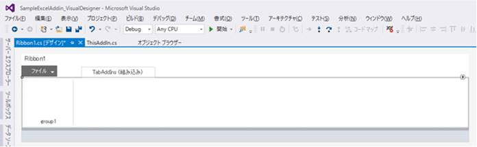
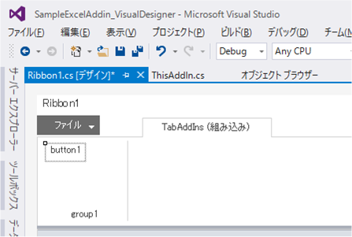
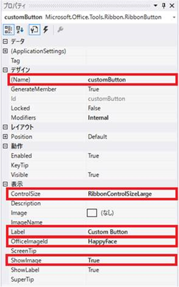
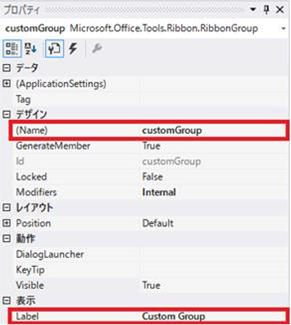
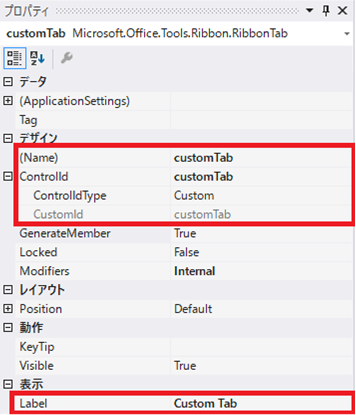
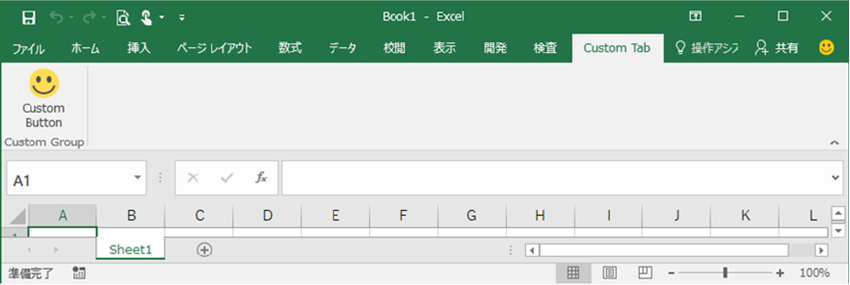

(※ 2017 年 3 月 9 日に Japan Office Developer Support Blog に公開した情報のアーカイブです。)
こんにちは、Office 開発 サポート チームの中村です。
今回も、リボンのカスタマイズ手順について解説していきます。今回の記事では、パート 1 で紹介した「c. VSTO からビジュアルなデザイナーを用いてカスタマイズを行う」 について紹介したいと思います。前回と同じく、サンプル作成を通して解説します。
VSTO ビジュアルなデザイナーでリボンをカスタマイズする
この方法は、VSTO で提供されている Visual Studio 上で GUI でリボンのカスタマイズを行うビジュアルなデザイナー機能を用いてリボンをカスタマイズします。カスタマイズ内容は、VSTO ランタイムによって VSTO ソリューションのロード時にOffice が読み込むことができるよう解釈され、リボンにカスタマイズが反映されます。
メリット
- GUI でリボンをカスタマイズできるため、XML コードを開発者が実装する必要がありません。直感的にデザインを行うことができます。
- VSTO はアドインおよびドキュメント形式のカスタマイズが作成できますので、リボン カスタマイズを反映させたい範囲に応じたソリューションが開発できます。
制約事項
- 既存のリボン コントロールを無効化する等のカスタマイズはできません。(既存タブに独自コントロールを追加することはできます。)
- VSTO で提供される機能のため、VSTO としての開発が必要です。C++ で開発された COM アドイン等からは利用できないことや、VSTOのインストール方法 (通常は ClickOnce) などを検討する必要があります。
それでは、ここからは Excel アドインのサンプルを作成する手順を説明していきます。
今回のテーマ
今回の記事では、サンプルの作成を通して以下を実現する方法をお伝えしたいと思います。
- VSTO アドインでビジュアルなデザイナーからリボンをカスタマイズする方法
- リボンのコールバック関数記述のポイント
サンプルの動作
前回の投稿と同じように、[Custom Tab] タブに表示された [Custom Button] をクリックするとメッセージ ボックスを表示をするサンプルを作成してみます。

図 1. サンプル プログラムの動作
1. 開発環境の準備
VSTO の開発に必要な環境を整えます。サポート環境については、以前の投稿をご参照ください。
今回は、Visual Studio 2015 + Excel 2016 + .NET Framework 4.6.2 がインストールされた環境で作成します。
2. VSTO プロジェクトの作成
まず、Excel VSTO アドイン プロジェクトを作成します。今回は C# で作成してみます。今回のプロジェクト名は「SampleExcelAddin_VisualDesigner」とします。

図 2. VSTO プロジェクトの作成
3. リボン (ビジュアルなデザイナー) 項目を追加
作成されたプロジェクトのソリューション エクスプローラーでプロジェクト名を右クリックし、[追加] – [新しい項目] をクリックします。
[Office/SharePoint] カテゴリに含まれる [リボン (ビジュアルなデザイナー)] を選択して [追加] をクリックします。

図 3. リボン (ビジュアルなデザイナー) の追加
そうすると、このように Visual Studio 上に Office リボンのレイアウトが表示されます。

図 4. リボン (ビジュアルなデザイナー) 画面イメージ
4. リボンにコントロールを追加
このリボン レイアウト上に、Office リボン コントロールを GUI 操作で配置できます。試しに、前回の投稿と同じようにコントロールを配置してみます。
[ツールボックス] メニューから、[Office リボン コントロール] カテゴリ内の [Button] を選択してドラッグし、リボン レイアウトの group1 の中にドロップします。すると以下のようにボタン コントロールが配置されます。

図 5. リボンにコントロール追加
次に、このボタン コントロールの表示を変更します。
まず、ツールバーの [表示] – [プロパティ ウィンドウ] をクリックしてプロパティ ウィンドウを Visual Studio 上に表示します。
次に、先程追加したボタン コントロールをクリックして、プロパティ ウィンドウにボタン コントロールの情報を表示して、ここから設定を変更します。今回変更したのは、以下の赤枠の部分です。デザイナー上は HappyFace アイコンは表示されませんが、アドインが実行されるときちんと表示されます。

図 6. ボタン コントロール プロパティ
同様に、グループも前回のサンプルと同じように変更してみます。

図 7. グループ コントロール プロパティ
次に、タブの設定です。タブ部分をクリックしてプロパティを表示します。
ポイント
VSTO ビジュアルなデザイナーを追加すると、既定では、[ControlIdType] が [Office] / [CustomId] が [TabAddIns] で作成されます。この設定では、[アドイン] タブにメニューが表示されます。[アドイン] タブは、Office に予め用意されたカスタマイズ メニュー用のタブで、他のプログラムからのカスタマイズで追加されるメニューとタブを共用します。ラベルに表示するタブ名は変更することができますが、他のアドインで既定の名前を想定している場合など、相互に影響を与える可能性を考慮する必要があります。
また、[ControlIdType] を [Office] に設定した状態で、[CustomId] に既存タブの ID (例えば、[ホーム] タブなら [tabHome]) を設定すると既存タブに独自コントロールを追加することもできます。
今回は、自アドイン専用のタブを作成したいと思いますので、以下のように [ControlId] の左側の [+] をクリックして詳細プロパティを展開し、[ControlIdType] に [Custom] を指定します。

図 8. タブ コントロール プロパティ
上の内容でアドインを実行すると、以下のように表示されます。

図 9. サンプル プログラム リボン表示イメージ
この他にも様々なコントロールが用意されていますので、ぜひツールボックスを眺めてみてください。また、ドラッグ＆ドロップで簡単に挿入できますので、実際に挿入して VSTO を実行し、リボン上でどのように表示されるかを気軽に確認してみてください。
5. コールバック関数の追加
次に、リボンのボタンをクリックしたときに呼び出されるコールバック関数を実装します。前回のサンプルでは VBA で記述していましたが、VSTO アドインの場合は、VSTO アドインの中に記述します。
ビジュアルなデザイナーで、ボタン コントロールをダブルクリックします。すると、コード表示に切り替わります。Visual Studio によって、[customButton_Click] 関数が既に挿入されていますので、あとは実行したいコードを C# で実装するだけです。今回のサンプルでは、前回と同じくメッセージボックスを表示するコードを記述します。
1 | private void customButton_Click(object sender, RibbonControlEventArgs e) |
6. ビルドして実行する
以上で完成です。F5 キーでプロジェクトをビルドしてデバッグ実行してみてください。VSTO アドインが有効化された状態で Excel が自動的に起動しますので、新規ブックを作成してリボンの動作を確認してみてください。
コールバック関数の記述ポイント
今回はメッセージボックスしか表示していませんが、実際のプログラムでは Excel ブックに対して処理を行うことが多いかと思います。リボンのコールバック関数(Ribbon クラス内の関数) から Excel ブックの操作を行う場合の記述方法について、はじめは戸惑うと思いますので、基本的な記述方法を少しご紹介します。
・this
リボン オブジェクト自身を表します。リボン上の他のコントロールの状態を変更したい場合などに使用します。
(コード例)
1 | this.customTab.Groups[0].Label = "グループ名変更"; |
グループの表示名を変更します。(あまり実用的ではないですが、サンプルにそのまま追加できる例にしています)
・Globals.ThisAddIn
Ribbon クラスから、他のクラス内のコードにアクセスするためには Globals オブジェクトにアクセスします。アドインのコードにアクセスするためには、このように Globals.ThisAddin と記述します。VSTO アドインからの Office オブジェクト モデルへのアクセスは、ThisAddin クラスに用意されていますので、リボンのコールバック関数から Excel ブックに対して操作するときは、Globals.ThisAddin クラスにアクセスすることになります。
(コード例)
1 | Globals.ThisAddIn.Application.ActiveWorkbook.ActiveSheet.Range("A1").Value = "test"; |
現在アクティブなシートの A1 セルに “test“ という値を入力します。
次の記事では VSTO で XML を用いてカスタマイズする方法を紹介しますが、ビジュアルなデザイナーで作成したデザインを Visual Studio 上で XML に変換することもできます。VSTO には慣れているけど XML はあまり・・・という方は、まずはこの方法でイメージを掴んで頂ければと思います。
今回の投稿は以上です。
本情報の内容 (添付文書、リンク先などを含む) は、作成日時点でのものであり、予告なく変更される場合があります。